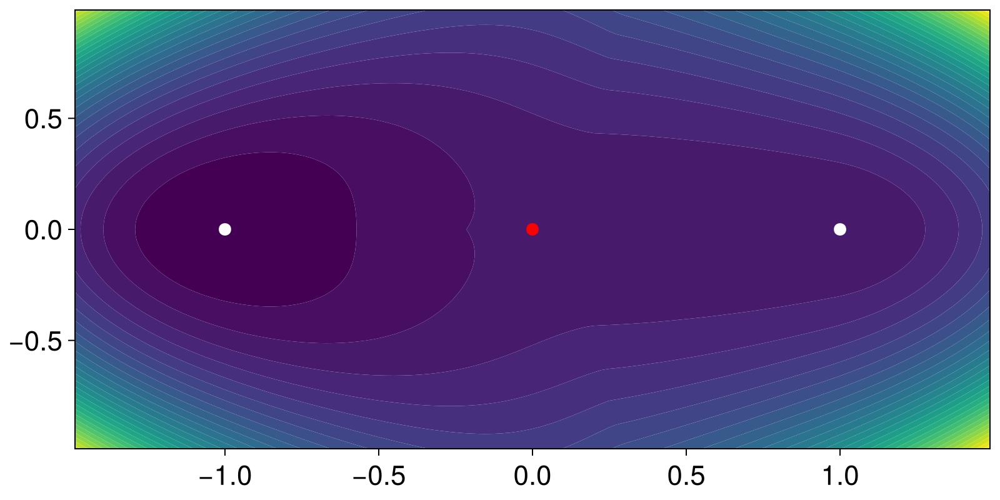

Quasipotential of the Maier-Stein model
using CriticalTransitions
using CairoMakieThe Freidlin-Wentzell quasipotential $U_A(x)$ measures the minimal action of the path connecting an attractor $x_A$ to a point $x$ in the small-noise limit. It controls the exponential rate of escape from $x_A$ and, for non-gradient drift, replaces the usual potential as the relevant Lyapunov function for the deterministic flow plus noise.
The Ordered Line Integral Method (Dahiya and Cameron 2018) computes $U_A(x)$ on a Cartesian grid in a single Dijkstra-style sweep. We apply it to the non-gradient Maier-Stein drift
\[\begin{aligned} \dot{u} &= u - u^3 - \beta\, u v^2 \\ \dot{v} &= -(1 + u^2) v \end{aligned}\]
with $\beta = 5$. The system has two stable fixed points at $(\pm 1, 0)$ and a saddle at the origin; the saddle value of $U_A$ is the Freidlin-Wentzell barrier between the wells.
f(x, p, t) = SVector(x[1] - x[1]^3 - 5 * x[1] * x[2]^2, -(1 + x[1]^2) * x[2])
sys = CoupledSDEs(f, [-1.0, 0.0]; noise_strength = 0.3)2-dimensional CoupledSDEs
deterministic: false
discrete time: false
in-place: false
dynamic rule: f
SDE solver: SOSRA
SDE kwargs: (abstol = 0.01, reltol = 0.01, dt = 0.1)
Noise type: (additive = true, autonomous = true, linear = true, invertible = true)
parameters: SciMLBase.NullParameters()
time: 0.0
state: [-1.0, 0.0]
We pick a grid that covers both attractors and call quasipotential with the left attractor as the source.
grid = CartesianGrid((-1.5, 1.5, 121), (-1.0, 1.0, 81))
qp = quasipotential(sys, grid, [-1.0, 0.0])CriticalTransitions.QuasiPotential{2, Float64}([6.258902285540556 5.9504677899919285 … 5.951120424331695 6.2595410064134445; 6.012917089456921 5.712497927608133 … 5.7133092607456115 6.013723950830079; … ; 6.491105735155327 6.190651294060791 … 6.191796019263595 6.492346037889211; 6.7367701767763055 6.428290018238663 … 6.4292498405500975 6.737883745017774], CriticalTransitions.BackRef{2}[CriticalTransitions.BackRef{2}(CartesianIndex(1, 7), CartesianIndex(2, 8), 0.9723206f0) CriticalTransitions.BackRef{2}(CartesianIndex(2, 8), CartesianIndex(2, 9), 0.8882261f0) … CriticalTransitions.BackRef{2}(CartesianIndex(2, 73), CartesianIndex(2, 73), NaN32) CriticalTransitions.BackRef{2}(CartesianIndex(1, 74), CartesianIndex(2, 74), 0.9502029f0); CriticalTransitions.BackRef{2}(CartesianIndex(3, 2), CartesianIndex(2, 3), 0.8110547f0) CriticalTransitions.BackRef{2}(CartesianIndex(3, 2), CartesianIndex(2, 3), 0.9013805f0) … CriticalTransitions.BackRef{2}(CartesianIndex(2, 75), CartesianIndex(3, 75), 0.6185515f0) CriticalTransitions.BackRef{2}(CartesianIndex(2, 76), CartesianIndex(3, 76), 0.57658345f0); … ; CriticalTransitions.BackRef{2}(CartesianIndex(119, 2), CartesianIndex(120, 3), 0.8136367f0) CriticalTransitions.BackRef{2}(CartesianIndex(119, 2), CartesianIndex(120, 3), 0.90268934f0) … CriticalTransitions.BackRef{2}(CartesianIndex(119, 72), CartesianIndex(119, 72), NaN32) CriticalTransitions.BackRef{2}(CartesianIndex(119, 73), CartesianIndex(119, 73), NaN32); CriticalTransitions.BackRef{2}(CartesianIndex(121, 7), CartesianIndex(120, 8), 0.9666895f0) CriticalTransitions.BackRef{2}(CartesianIndex(120, 8), CartesianIndex(120, 9), 0.9693709f0) … CriticalTransitions.BackRef{2}(CartesianIndex(120, 73), CartesianIndex(120, 73), NaN32) CriticalTransitions.BackRef{2}(CartesianIndex(120, 73), CartesianIndex(120, 73), NaN32)], CartesianIndex(21, 41), CartesianGrid{2, Float64}((121, 81), (0.024793388429752067, 0.024691358024691357), (LinRange{Float64}(-1.487603305785124, 1.487603305785124, 121), LinRange{Float64}(-0.9876543209876543, 0.9876543209876543, 81)), (LinRange{Float64}(-1.5, 1.5, 122), LinRange{Float64}(-1.0, 1.0, 82))))The saddle at $(0, 0)$ sits at cell CartesianIndex(61, 41). For this system the analytic barrier is known to be $1/3$.
qp.U[CartesianIndex(61, 41)]0.48256677447474255Contour plot of qp.U, with both attractors marked in white and the saddle in red.
fig, ax, _ = contourf(
qp.grid.centers[1], qp.grid.centers[2], qp.U;
levels = 30, colormap = :viridis,
)
scatter!(
ax, [-1.0, 1.0, 0.0], [0.0, 0.0, 0.0];
color = [:white, :white, :red], markersize = 14,
)
fig
This page was generated using Literate.jl.